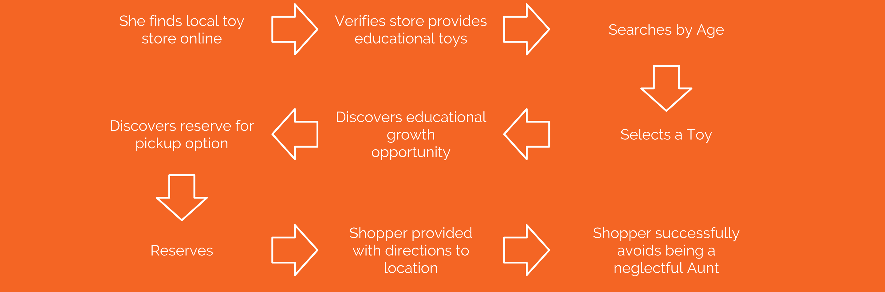

In presenting my research for my first project at General Assembly I wanted to lead with what I learned. Since this project is about being a student and learning the UX design process for the first time, I felt like this would be able to help guide any discussion better.
What I learned
- The research needs to be clear and organized. This is where using showing user journeys and telling stories through models and frameworks is important.
- When I designed for this project I let my interest in providing an amazing toy experience guide me too quickly into a high-fidelity prototype. For future projects, I will intend to spend most of my energies in research and testing assumptions in a low fidelity solution. I learned here that iteration is key and that tester tend to make assumptions and mental leaps when the product is a high-fidelity prototype. Testing feedback is crucial to making changes and building through a nimble process.
- A focused test approach through stronger scenarios that attack my weakest held assumptions is important to getting user feedback that guides the design process.
- Learning styles and development types are not only important to parents but getting them wrong and representing them poorly can lose trust from the user base.
Background
The Problem
Toys et Cetera is looking to communicate their message through an Improved digital shopping experience. Shoppers need a way to purchase toys and feel like they have made an informed decision.
Role
This was a mock client project as a part of General Assembly User Experience Design Immersive. This was a solo project but we compiled our research as a class. I led all aspects of the UX process.
The Client
Toys Et Cetera is a local toy store that was founded 40 + years ago to provide educational, developmentally sound, and culturally relevant toys. They are looking to support the growth of physically, socially, and emotionally healthy children through safe toys. They have three locations in Chicago: HydePark, Lincoln Park and Andersonville.
Tools Used
Sketch, Illustrator, and Invision.
Time Frame
This was a ten-day design sprint structured around learning the UX process.
The Challenge
Initial Investigation
The investigation began through scrubbing the Toys Et Cetera website:
- Their development focused mission was lost between multiple pages, deep menus, dead ends, and redundant holiday ads.
- Searching toys was difficult due to the complex generalizations of toy types and development styles.
- Purchasing toys was complicated and multifaceted.

Ethnographic Research
Our first step was observing following the POEMS framework. Each team went to a different location to explore the setting and interview customers.
- The store is walkable, near other kid-themed stores and has a large selection of free parking.
- The interior is intimate and designed around education, safety, and color. It is full of toys, and curated towards interactivity with children.
Interviews
I conducted four phone interviews and we captured two in person shopping interviews. Some of the commonalities of these interviews were:
- The allure of a toy store is strongly nostalgic with bright colors and sensory objects as the focal point.
- Shoppers prioritize educational and developmental when browsing at the toy store.
- Finding toy stores can be a difficult and somewhat random process.
- A toy store can be a chaotic and overwhelming place on its own and it is easy to get lost in the myriad of toys. Shoppers can quickly be overcome with decision fatigue and they need a way to connect with the store’s founding principles and goals.
Competitive Anaylsis
As we were analyzing other online toy stores we noticed they shared some principles in common. Every store was centered on education, safety and bright and colorful.
The Golden Circle
Through looking at our affinity maps, we modeled a Golden Circle about the core principles of Toys et Cetera and their mission. We found that parents want to raise successful children through engaging them in educational play by providing developmentally focused toys.
Insights
Users are looking for:
- Quick access to location specific information (store hours, directions, inventories)
- a way to understand how development types can affect the learning goals of their children
- An easy system to browse, shop, and reserve toys without the chaos of the in-store experience.
- A toy store can be an overwhelming place on its own and it is easy to get lost in the myriad of toys. Shoppers can quickly be overcome with decision fatigue and they need a way to connect with the store’s founding principles and goals.
Design Principles
Solutions Should...
- Remove obstacles to provide shoppers a smooth online retail experience.
- Provide shoppers easy way to associate toys with development types and learning styles.
- Simplify finding and reserving items for pickup in brick and mortar stores.
- Evoke the spirit of play.
Design Features
Learning Types and Development Styles.
The changes made to Venmo needed to be small tweaks with a big impact. Developing a set of icons that stayed consistent with the Venmo model was crucial to setting an appropriate tone.
Cooperative Play

Individual Play

Visual
Auditory
Logical Thought

Motor Skills

Creative

Language Development
User Flow
Aunt Katie needs to buy her ten year old nephew Kai a Christmas present but it’s two days before and too it’s late to order online. She knows that she wants to give him something educational but she is stressed out about the thought of a mega store like Toys R US. She is hoping for something more local.
Design Iterations
Mimicking
We started our paper prototypes by mimicking the Venmo layout. Since we determined staying consistent was important we needed to get a good sense of how the app was laid out. The paper sketches gave us a great sense of the features Venmo was already using but it didnt help us test our own features because of the specificity of the icons. We started to realize small tweaks with a big impact was going to be difficult.
Building
We were able to test our weakest held assumptions regarding icons, microinteractions, and feedback for the user with our low fidelity wireframes.
Adding Clarity
Turning the low fidelity wireframes into a high fidelity prototype was a very quick process because we had to manage our icon assets up front to provide clarity during testing. This process was more about adding additional clarity than it was about solving any major design issues.
The Scenarios
We did our first round of wireframe tests with 6 people. We tested within two scenarios. One scenario was for regular Venmo users to make a donation to their favorite charity the Red Cross. The second scenario was with charitable organization employeess acting as the red cross to set up a cause to raise money for a recent tsunami.

Menu - Paper
“I want to know how my Friends are finding these charities so i can get involved as well”

Menu - Wireframe
“I want to know how my Friends are finding these charities so i can get involved as well”

Menu - Highfidelity
“I want to know how my Friends are finding these charities so i can get involved as well”

Profle - Paper
“I want to know how my Friends are finding these charities so i can get involved as well”

Profile - Wireframe
“I want to know how my Friends are finding these charities so i can get involved as well”

Profile- HighFidelity
“I want to know how my Friends are finding these charities so i can get involved as well”

Feed - Paper
“I want to know how my Friends are finding these charities so i can get involved as well”

Feed - Wireframe
“I want to know how my Friends are finding these charities so i can get involved as well”

Feed - HighFidelity
“I want to know how my Friends are finding these charities so i can get involved as well”

Donation - Paper
“I want to know how my Friends are finding these charities so i can get involved as well”

Donation - Wireframe
“I want to know how my Friends are finding these charities so i can get involved as well”

Donation - HighFidelity
“I want to know how my Friends are finding these charities so i can get involved as well”
Test Results
Our testing solved many user flow issues and provided direction in how to move forward. We struggled with with a two flow solution, and learned that if we are going to test two user flows we needed to completely seperate those flows and screens. This was probably the biggest struggle within the project and this cost us the most amount of time.
- Users responded very positively to the heart badge because it was consistent with other verification badges.
- Users commented on the consistency of the Venmo experience, and how it was so similar to the Venmo experiences they currently know
- Users responded very poorly to being asked if they would like to be contacted by the charity.
- We had initially assumed that searching for a charity would happen within the same flow as the "search people" but without a search charity icon in the menu button people were confused on how to look for a charity.
Prototype Walkthrough
Next Steps
A Second Sprint
After completing the 10 day sprint we took our prototype over to the Delta Institute to validate our research even further. We allowed charity organizers to play around with the prototype and we got feedback that showed we could stand to go through a second design sprint. The main thing these charity organizers talked about was being able to switch from their personal account to a charity Venmo account they are managing. They also asked questions about backend features and commented on how they enjoyed the bio section in the causes page.
Additional Features
- Data report feature
- Group feature / charity feature integration
- Profile management / switching between a personal account and a charity account
- Personal account- causes feature
- Bio section for all Venmo profiles
Reflections
Additional Questions
As we wrapped up the project I was left with a lot of questions on how to improve our product.
- How does a charity manager who has a personal Venmo account switch between accounts, but enable trust throughout the charities, and through the donor?
- What are the analytics that charities need, and what do effective analytics look like?
- Can we push further a platform where we are enabling a greater sense of giving and responsibility?
Things I learned
Beyond the questions I had I also was left a greater understanding of the UX process and where I could grow.
- Mapping a concrete user flow is vital to speed when creating wireframes.
- Test as early as possible to help validate the weakest held assumptions.
- Create tests that develop a scenario the user can embody, and ask open ended questions.
- Documentation is extremely important.